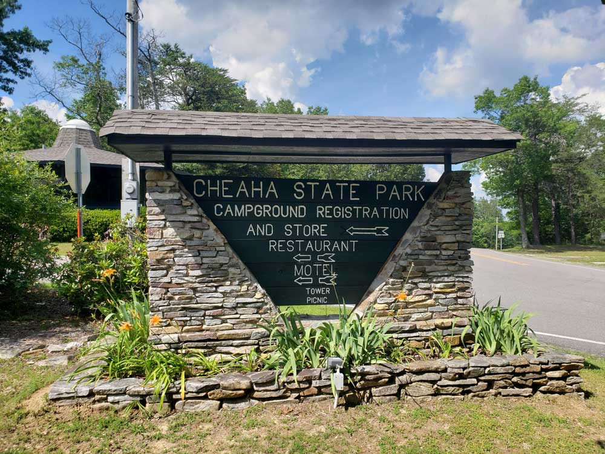
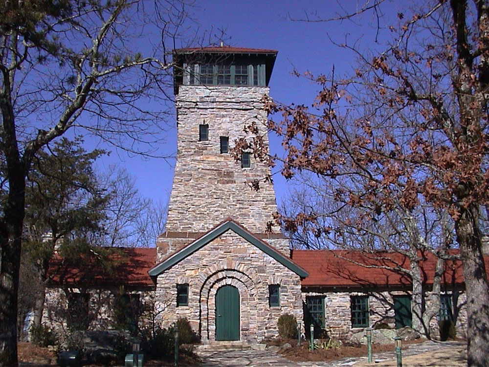
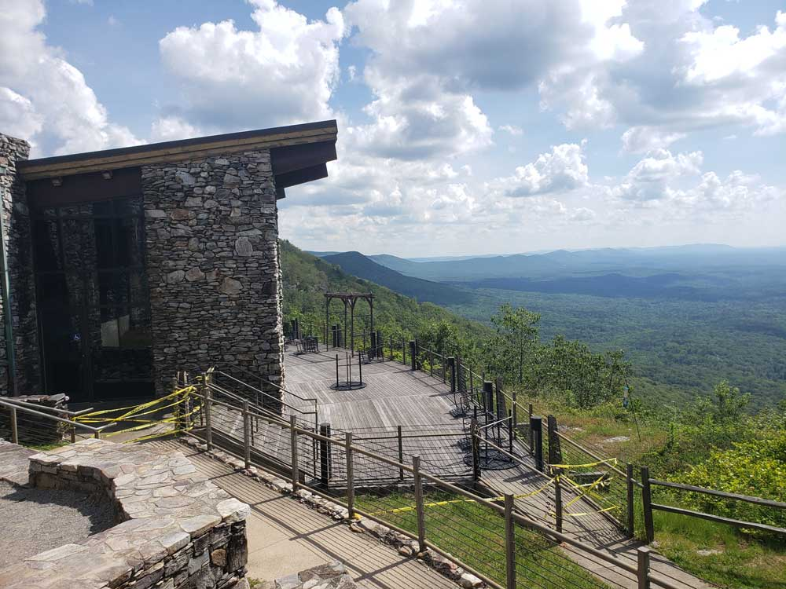
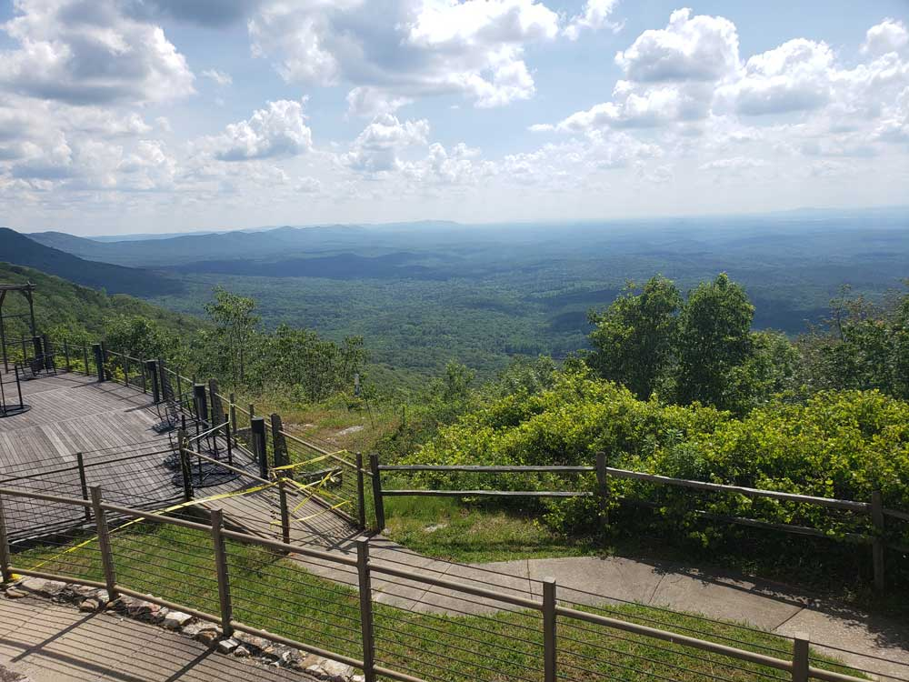
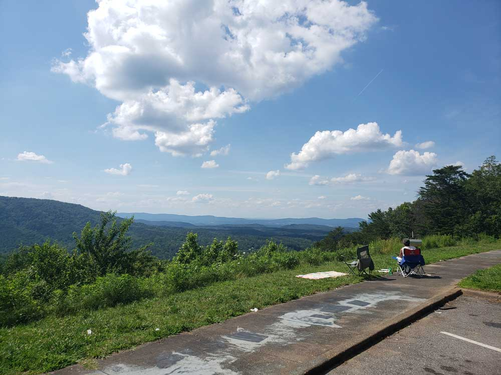
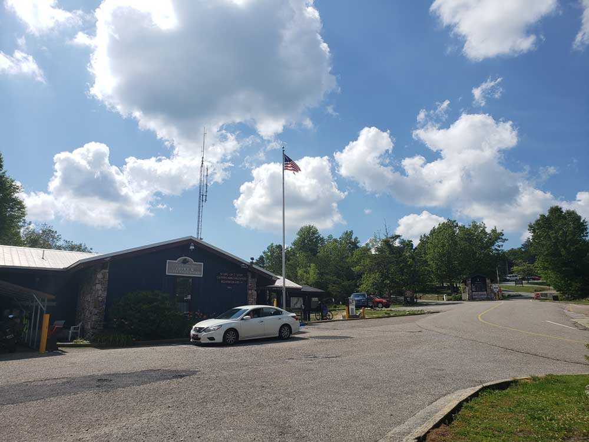

Preserves a historic battlefield where a pivotal conflict during the Creek War dramatically altered the course of American expansion and Native American history.
General Information
Tour Road: Daily, 8 a.m. to 5 p.m. CST
Boat Ramp: Dawn to dusk
Closed: Thanksgiving Day, Christmas Day, and New Year’s Day
How to Get There
From Montgomery, AL (75 mi): Take US-231 N to AL-63 N in Elmore County. Continue on AL-63 N, then take AL-229 N and AL-49 N to Horseshoe Bend Rd in Daviston.
Overview
Horseshoe Bend National Military Park preserves the site of the Battle of Horseshoe Bend, fought on March 27, 1814, during the Creek War. General Andrew Jackson led U.S. forces and allied Cherokee and Lower Creek warriors against the Red Stick faction of the Creek Nation in a bend of the Tallapoosa River, and more than 800 Red Stick warriors were killed. The defeat effectively ended the Creek War and led to the Treaty of Fort Jackson, in which the Creek ceded about 23 million acres to the United States. The site was set aside by Congress in the 1950s as a unit of the National Park Service, and today it offers about 2,000 acres of preserved battlefield, a tour road, walking trails and a visitor center.
Access
The park is near Daviston in Tallapoosa County in east-central Alabama, about 12 miles north of Dadeville on AL-49. From Montgomery, the drive takes about an hour and a half, and Alexander City, with the closest hotels, is roughly 15 to 20 miles away. A car is needed, as there is no public transportation. The park's tour road is open for driving during posted hours, and a boat ramp on the Tallapoosa River is open from dawn to dusk.
Seasons
Spring and fall are the most pleasant seasons for visiting, with mild weather for walking the battlefield and lovely light on the river. Summers are hot, humid and buggy, and the mostly open ground offers limited shade, so bring water and plan outdoor time for the morning. Winters are generally mild, with fewer visitors and clear views of the landscape. The park is closed on Thanksgiving Day, Christmas Day and New Year's Day.
Things to Do
Explore the Battlefield
Horseshoe Bend National Military Park preserves the site of the Battle of Horseshoe Bend, fought on March 27, 1814, during the Creek War. Visitors can explore the battlefield and learn about the conflict that significantly shaped the future of the southeastern United States and led to major changes for the Creek Nation.
Visit the Visitor Center and Museum
The visitor center features exhibits, artifacts, maps, and educational displays that explain the Creek War, the Battle of Horseshoe Bend, and the roles of Andrew Jackson, the Creek people, and their allies. A museum and film provide additional historical context for visitors.
See the Tallapoosa River and Historic Sites
Visitors can enjoy scenic views of the Tallapoosa River while exploring important battlefield locations, monuments, interpretive exhibits, and reconstructed fortifications that help tell the story of the 1814 battle and its lasting historical impact.
Top Trails
Battlefield Nature Trail
Length: Approximately 2.8 miles loop
Elevation Gain: Minimal
Difficulty: Easy
This trail follows portions of the battlefield and riverfront, allowing visitors to explore key battle locations while learning about military strategy, the natural environment, and the history of the Creek War through interpretive exhibits.
Tour Road Walking Route
Length: Approximately 3.0 miles round trip
Elevation Gain: Minimal
Difficulty: Easy
Visitors can walk sections of the park's tour road to access monuments, overlooks, and interpretive stops while gaining a deeper understanding of the events that unfolded during the Battle of Horseshoe Bend.
Visitor Centers
The visitor center is the best place to begin, with exhibits and artifacts on the Creek War and the battle, a short film and rangers who can explain the tour road and trails. It is open daily except on a few holidays, and posted hours should be checked before you go. The visitor center also has restrooms and a place to pick up a battlefield map. Ranger programs and living history events are offered at certain times of the year.
Camping and Lodging
There is no lodging in the park, and camping is not offered there. Alexander City, about 15 to 20 miles away, and Dadeville have chain hotels, motels and restaurants. Wind Creek State Park, on Lake Martin near Alexander City, has a large campground and is the closest state park for camping. Lake Martin has a number of vacation rentals, and Montgomery and Auburn, each roughly an hour to an hour and a half away, offer a larger selection of hotels.
Sources: National Park Service official Horseshoe Bend National Military Park information, including battlefield history, visitor center exhibits, interpretive programs, hiking opportunities, and visitor resources. https://www.nps.gov/hobe/index.htm Additional historical, trail, and visitor information verified through National Park Service planning and interpretive resources. https://www.nps.gov/hobe/planyourvisit/index.htm https://www.nps.gov/hobe/learn/historyculture/index.htm
This article uses material from the Wikipedia articles and official tourism pages for the Horseshoe Bend National Military Park, which are released under the Creative Commons Attribution-Share-Alike License 3.0.






